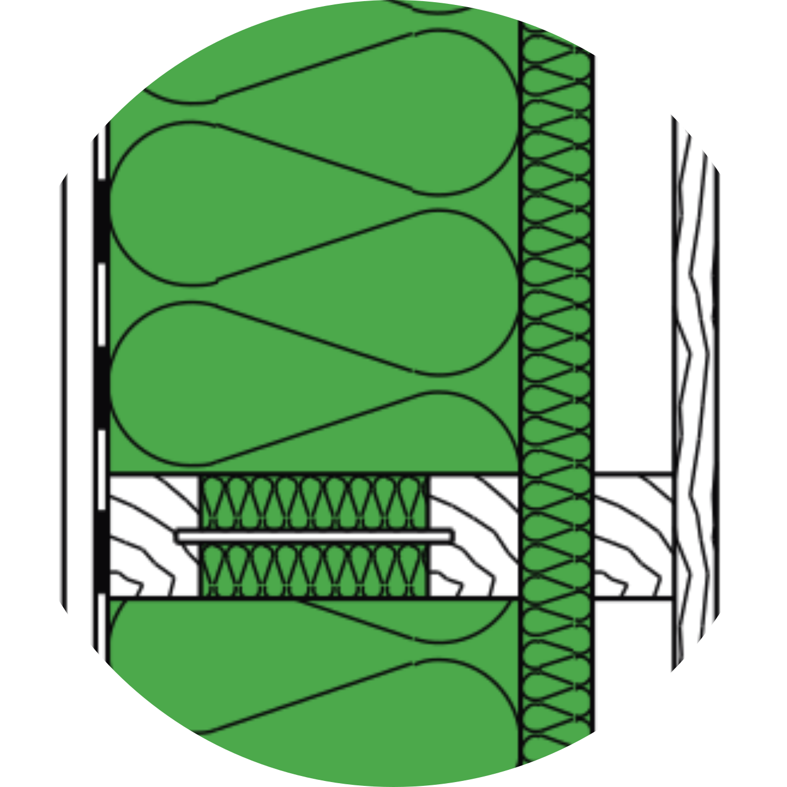
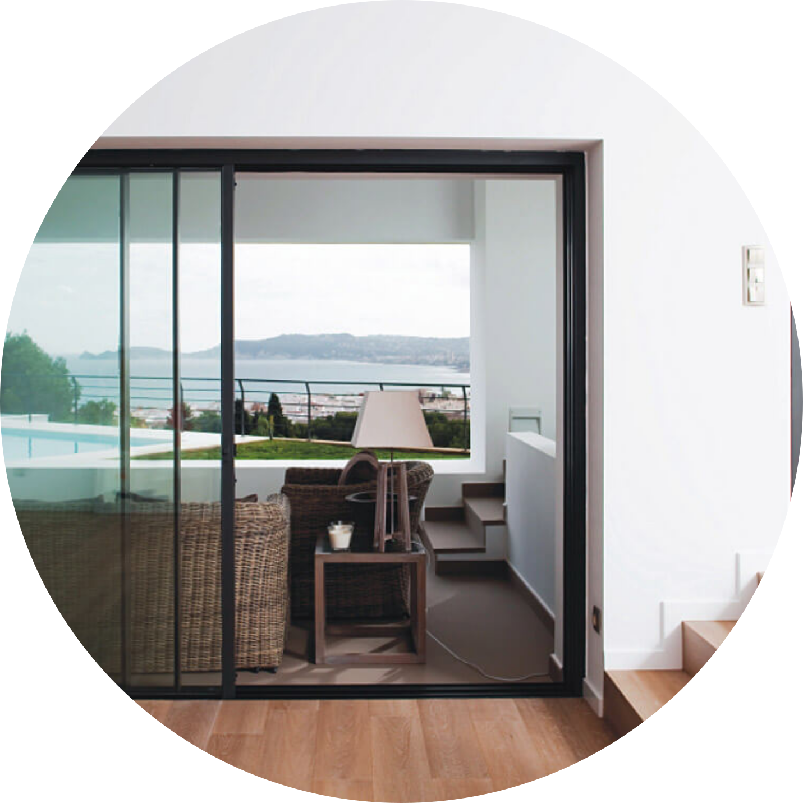
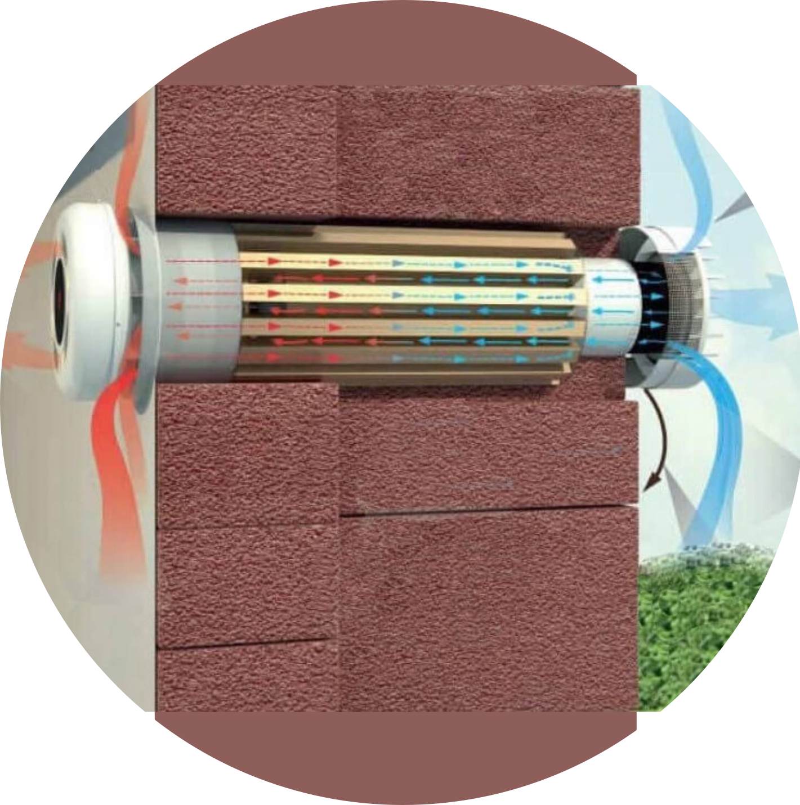
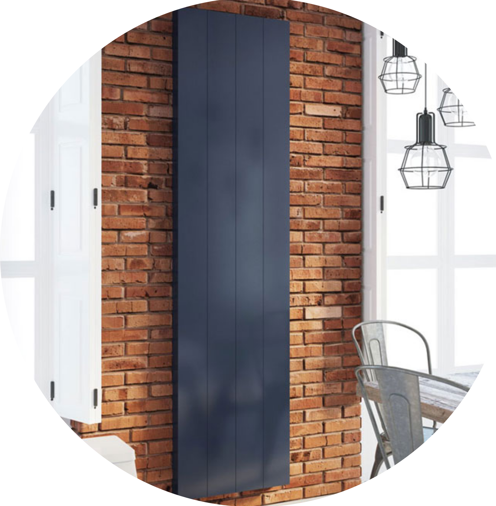
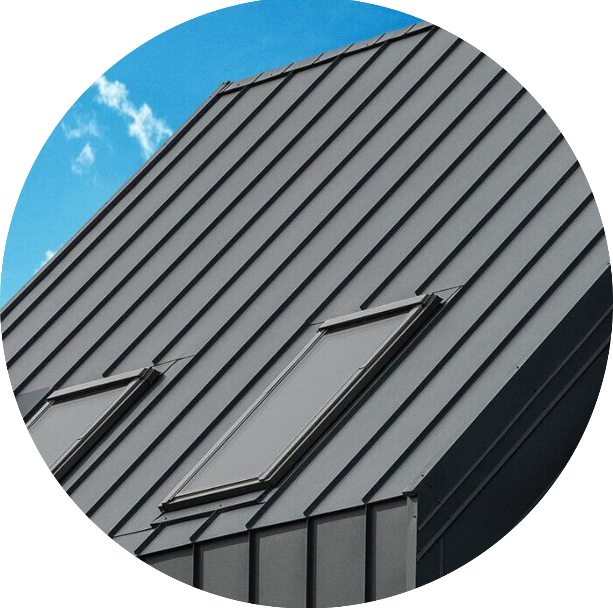

Barn M - duży dom dla dużej rodziny
Model BARNHOMES Barn M to pełnoprawny piętrowy Barn z wysokimi sufitami i panoramicznymi przeszkleniami, napełniającymi Dom naturalnym światłem.
Barn M - to Dom idealny dla dużej rodziny.
BWspółczesny, lecz klasyczny. Majestatyczny ale jednocześnie lekki i przytulny.
Zalety Barna modeli M:
- Duża przestrzeń. Przestron..
- Ciepły, energooszczędny Dom dla rodziny.
- Możliwość rozbudowy. Barn M - to trzeci podstawowy element oferty BARNHOMES, z którego zbudować można większe Barny. Kiedy przestrzeń domu staje się niewystarczająca z łatwością można rozbudować go w konfigurację XS-M-XS, lub XS-M-XS-S, lub dowolna dopasowaną do potrzeb
Masz pytania? Zadzwoń
Zadzwoń do nas teraz, i my odpowiemy na wszystkie twoje pytania oraz przygotujemy korzystną ofertę na twój nowy Barn.
Wymiary i wnętrza
Barn XS - to całoroczny ciepły energooszczędny domek, który może byc wykonany wi wielu różnych wymiarach.
Barn XS może wstać na fundament 5x7 metrów, albo 5x10 lub 7x12, lub w każdym dowolnym wymiarze.
Technologia i materiały
Prefabrykowane domy BH są zbudowane w technologii szkieletowej z użyciem systemowych rozwiązań i ekologicznych materiałów niemieckiego producenta Steico. Prefabrykacja pozwala oszczędzić czas realizacji projektu, oraz zminimalizować ryzyko jakichkolwiek błędów konstrukcyjnych pod czas budowy. Montaż doma BARNHOMES zajmuję najczęściej od tygodnia do 40 dni, w zależności od wielkości projektu oraz jego skomplikowaności.
Przekrój ściany
Domy BARNHOMES są ocieplone matami z włókna drzewnego Steico Flex i Steico Protect które są ekologiczne, ciepłe i otwarte dyfuzyjnie, co gwarantuje naturalne oddychanie ścian. Podstawowa model ściany BARNHOMES zawierz 200 mm ocieplenia w matach Steico Flex, oraz 40 mm Steico Protect, co pozwala osiągnąć współczynnik przenikania ciepła U = 0.15 W/m2K. Dla porównania - ściana murowana o grubości 40 cm (zawierając 20cm styropianu) ma taki sa współczynnik U, ale ściany BH przy tym mają grubość poniżej 30 cm, i są o wiele lżejsze, co, ze swojej kolei, pozwala zaoszczędzić na fundamencie i materiałach.
Okna i drzwi
Wszystkie okna oraz witryny w BARNHOMES mają nowoczesne energooszczędne dwukomorowe zespolone szyby, z Ug = 0.5 W/m2K
Wentylacja z odzyskiem ciepła
Domy BARNHOMES są wyposażone w nowoczesne systemy wentylacyjne z odzyskiem ciepła. System wentylacji BARNHOMES pozwala odzyskiwać do 82% ciepła podczas wietrzenia domu, co zapewnia oszczędność w rachunkach za ogrzewanie oraz czyste filtrowane powietrze 24 godziny na dobę.
Ogrzewanie
Domy BARNHOMES mają kilka opcyj ogrzewania - dla każdego klienta, dla każdego budżeta, dla każdego klimata.
Wykończenia
W standartowej kompektacji domy BARNHOMES są wykończone blaszanym panelem "Hight Tech" od Polskiego producenta Blachotrapez. Blacha od Blachotrapeza jest w zajebistym antracytowym kolorze, takim niesamowitym zajebistym, że sąsiedzi będą zazdrościć!